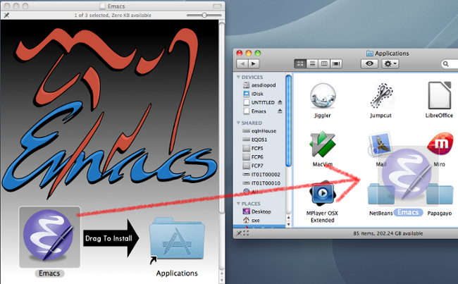
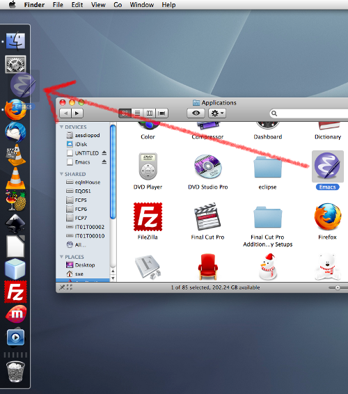
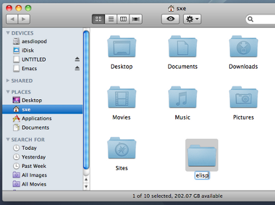
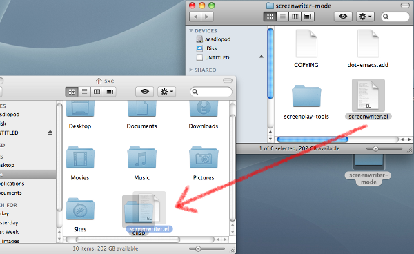
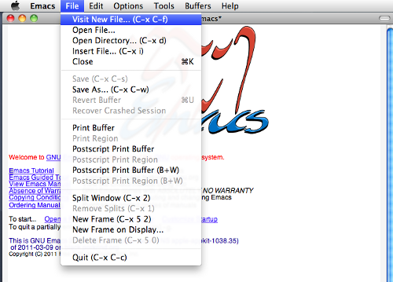
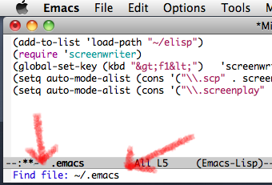
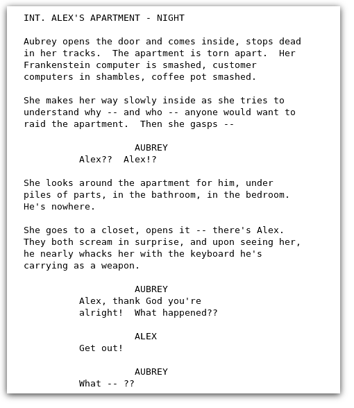

Made on Free Software.


If you're on a Mac, you might be familiar with other screenwriting programs that specialize in doing two things: giving you a headache over licensing, both in terms of cost and how many devices you're allowed to use the application on, and the ever-present threat of locking you out of your data.
Screenwriter-mode and Emacs will never do either; GNU Emacs uses plain text files as its format, so no matter where you are, you'll always be able to get to your screenplays. Emacs is owned by you, the user, and it's designed to be completely multi-platform, so even if you find yourself on someone's Windows computer (perish the thought), you could download and use Emacs and screenwriter-mode with a few clicks. And while Apple itself has abandoned the "old" PowerPC Macs, GNU Emacs still supports them.
Doing stuff on Mac OS is super simple, isn't it? Sure it is, that's why you use a Mac! With that in mind, the installation instructions use few words and mostly pictures. Follow along!
Download Emacs from www.EmacsForOSX.com and install it.
Place it in your dock so you can find it later:
Download Screenwriter-mode and uncompress it in the Finder.
Make a new folder for your Emacs extensions:
And copy the file named screenwriter.el into that new folder:
It's installed! One more step to go.
Launch Emacs (it's in your dock if you're following this tutorial closely; otherwise, find it in your Applications folder). Create a new file with the File menu's Visit New File selection.
Notice that at the bottom of the Emacs window, you are asked to name the file you are about to create. Make sure to name it exactly what is shown in the picture: ~/.emacs
Copy and paste this into the new file:
(add-to-list 'load-path "~/elisp")
(require 'screenwriter)
(global-set-key (kbd "<f1>") 'screenwriter-mode)
(setq auto-mode-alist (cons '("\\.scp" . screenwriter-mode) auto-mode-alist))
(setq auto-mode-alist (cons '("\\.screenplay" . screenwriter-mode) auto-mode-alist))
Save the file, close Emacs, re-launch it, and start writing screenplays.
If you've never used Emacs, you'll find it unique. Of course, "unique" hardly makes it difficult; in fact, its unique qualities are mostly the reasons people have loved and used Emacs for so long.
GNU Emacs existed long before popular word processors and graphic applications, so all of the control-c to copy and control-v to paste and control-s to save and similar shortcuts you might know? throw them out. They weren't even invented when Emacs came around.
Emacs uses sequential key shortcuts, logically divided into three main categories:
If you've never used Emacs, you should practise a little at the keyboard shortcuts. Try hitting control-x to see how it places you in a "command mode" (after you press control-x, look down at the bottom of your Emacs window and you'll notice that Emacs is patiently awaiting a second key press), and then control-f for "Find File", meaning you wish to open a new file. Then type in a new name for the blank document you about to open, and hit return.
Of course, you could also just go to the File menu and select "Open" or "Visit New File".
Now that you have a blank document, you can enter screenwriter-mode by pressing alt-x (in Emacs terms they call this meta-x, since the Alt key is not always called an Alt key on all keyboards) and then typing in screenwriter-mode.
Alternately, you could simply press F1, since we've configured Emacs with our .emacs file to assign F1 to opening screenwriter-mode.
Now that you are in screenwriter-mode, you can use the four screenwriter commands, which all use alt plus a single mnemonic letter:
Usually, you do not need to press RETURN; when you have finished typing in a block of action, simply press alt-s d to enter dialogue mode, and after the dialogue is finished press alt-s a to get back to action, and so on.
To save your document, use control-x and control-s, or the File menu.
If formatting gets confused, then you can correct it with moving your cursor (with your arrow keys or mouse) to the block of text that is not properly formatted, and press control-u and then the format style you want to be applied to it, such as alt-s a or whatever. In other words, if you accidentally typed some dialogue in as action, move your cursor to the paragraph, press control-u to place you into correction mode, and then alt-s d to re-format.
In the end, you should get a screenplay that looks a little something like this:
That's about all there is to know about the basics of screenwriter-mode and GNU Emacs. Enjoy!
Made on Free Software.